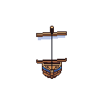
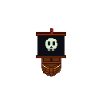

Sobre
Este é um jogo de canhões desenvolvido como parte de um projeto educacional. O objetivo do jogo é controlar um barco e evitar obstáculos enquanto avança pelos níveis.
O jogo foi criado utilizando HTML, CSS e JavaScript, com foco em mecânicas de colisão e física para proporcionar uma experiência divertida e desafiadora.
O jogador 1 controla o barco com as teclas WASD e dispara com as teclas Q e E.
O jogador 2 controla o barco com as teclas 8456 e dispara com as teclas 7 e 9 (usa o numpad).
Professor Orientador: Carlos Roberto da Silva Filho
Alunos: Henrique Justus, Matheus Steingraber, Juan Amorim, Fabio Trevisan
